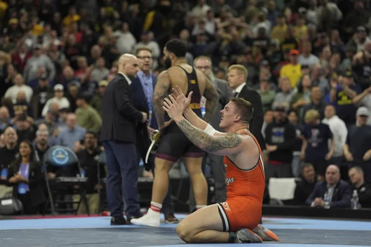

The 2025 Dan Hodge Trophy, awarded to the top NCAA Division I wrestler, has sparked intense debate among fans and experts alike. Three standout wrestlers—Wyatt Hendrickson from Oklahoma State, Carter Starocci from Penn State, and Mitchell Mesenbrink, also from Penn State—emerged as finalists after undefeated seasons and national titles. Each brings a unique case: Hendrickson’s historic upset, Starocci’s unprecedented fifth NCAA title, and Mesenbrink’s sheer dominance. With the winner to be announced on March 31, 2025, let’s break down their credentials.

Wyatt Hendrickson shocked the wrestling world by defeating Olympic gold medalist Gable Steveson in the heavyweight final, finishing 27-0 with 13 pins and an 81.5% bonus-point rate. Carter Starocci made history as the first five-time NCAA champion, going 26-0 at 184 pounds with an 84.6% bonus-point rate. Mitchell Mesenbrink, a sophomore, dominated at 165 pounds with a 27-0 record, leading the nation with 18 technical falls and an 88.9% bonus-point rate. Their performances have left fans split on who truly deserves the Hodge Trophy.